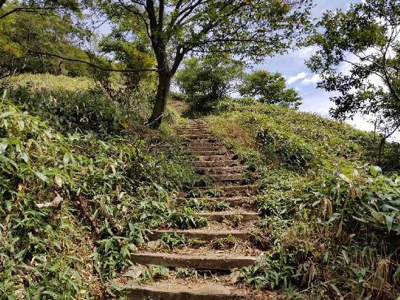
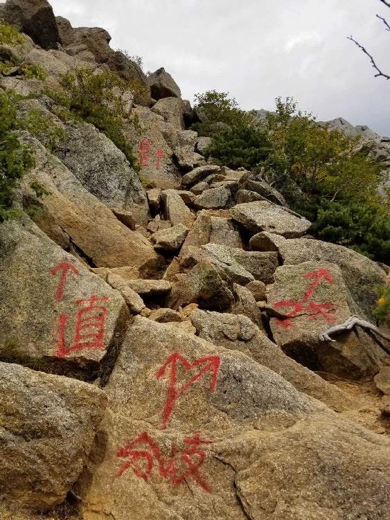
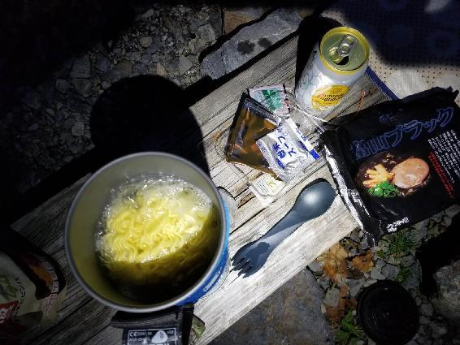
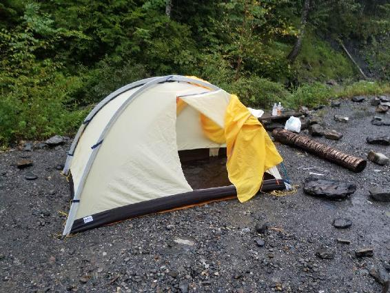
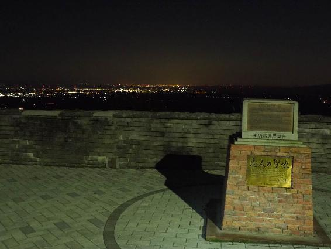
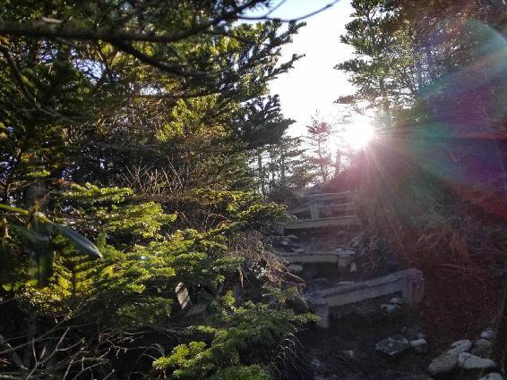

| 百名山ピークハント Vol.4: Episode 016-020 (The BBB: Breakthrough Bandwagon Books) | |
| 穂高 | |
| The BBB: Breakthrough Bandwagon Books (2019) | |
Japanese 100 Great Mountains Vol.4: Episode 016-020 (Jp)
（邦題『百名山ピークハントVol.4: Episode 016-20』）
Originally written in Japanese and translated by Hodaka
Photographs by Hodaka
Cover design by Tanya
Copyright © 2019 Hodaka / The BBB: Breakthrough Bandwagon Books
All rights reserved.
ISBN: 978-0-359-69769-4
Episode 016: 瑞牆山（みずがきやま）
金峰山（きんぷさん）へ登頂した後（Episode 015 参照）、麓（ふもと）の分岐点となる富士見平（ふじみだいら）小屋へは11時半頃に下山してきました。今回登ったコースはこの富士見平小屋からもう一つの百名山である瑞牆山（みずがきやま）も登ることができます。
金峰山と近くにありながらもその山容は大きく異なり、金峰山がどっしりと構えた山容なのに対し、瑞牆山は鋭い岩が林立する特徴のある山容です。
金峰山からの下山中、昼食は富士見平小屋で注文して、しっかり食事を取ろうと思っていましたが、朝は見かけた管理人が不在のようで、山小屋は閉まっていました。仕方なく山小屋前のベンチで持ってきた菓子パンなどを食べました。午前中だけでもかなり歩いたので、ベンチに横になって休み、ストレッチをしたり、体力の回復に努めました。
瑞牆山へはここからコースタイムでは往復３時間半程で戻ってこられるので、時間的には十分に余裕があります。持ってきた水は午前中でほとんど飲み干してしまったので、山小屋から数分歩いたところの水場で補充して、12時半頃から瑞牆山へ登り始めました。
朝から瑞牆山に登った人達がちょうど降りてくる頃で、何組かとすれ違いました。午前中は見事な青空が広がっていましたが、少し雲が多くなってきた気がしました。気温は35度近くにはなる予報で、これからまた上昇しそうです。今日はこのまま温泉に入ってまたの機会に登ろうかなという考えも一瞬よぎりましたが、目の前にすぐ登れる山があるので、行けるとこまで行ってみることにしました。
瑞牆山は標高2,230mで、山梨県に位置する信仰の山です。古くから修験者たちによる登山が行われていました。「瑞牆」とは明治時代に名付けられた名称であり、神社の周囲に巡らす垣根のことを意味しています。
山小屋を出発して少し登ると、すぐに瑞牆山が見渡せる稜線に出ます。そこから、はるか先の高さに切り立った岩々が見えました。瑞牆山の山頂とクライマーを魅了する「大ヤスリ岩」と呼ばれる直立した岩です。ガイドブックのコースタイムは頂上までは２時間とありますが、その時間で辿り着けるのかと思えるような高さに感じました。瑞牆山は昔から修験の地でもあったように、人を容易には受け入れないような峻厳（しゅんげん）さを感じました。
しばらく稜線を歩き、その後は登りが続くかと思ったら急な道をどんどん下って、沢に出ました。飛び石の上を歩いて沢を渡り、ここからまた今降りた分も登らなくてはならないと思うと少しうんざりしました。頂上までは400ｍ程の高低差です。
しばらく進むと高さ10ｍはありそうな大きな岩が見えました。この岩は真ん中で割れていて、「桃太郎岩」と呼ばれています。確かに真ん中で見事に二つに割れているようで、桃を切ったように見えなくもありません。その岩の下には何本もの木の棒が岩を支えるように置かれていました。もちろん実際に支えになっているはずはなく、演出だと思いますが、この後に出てくる巨石にも木の棒が同様に置かれていました。桃太郎岩の横の階段を登ると、傾斜のきつい岩場の道が続いていきます。
山で他の登山者とすれ違うときによく挨拶を交わします。また、通常は落石などの危険も考えて基本的には登りの方が優先となりますが、その辺は状況次第で臨機応変に対処します。
この日も何組かとすれ違い、そのうち、教員が先頭に立った小学生の集団とすれ違うことになりました。ちょうどきつい登りを終えて、あがった息を整えるのに好都合だったので、小学生達に先に下りてもらいました。その間、道の脇に座って休んでいましたが、何十人もの小学生が次々に「こんにちは」と声を掛けてくるので、そのたびに返事をして、あまりゆっくりは休めませんでした。それにしても、この暑さのなかで、岩場がある結構な登りを小学生が軽装でよく登るなぁと感心して見ていました。
しばらくして天に向かって真っすぐに向かって伸びている「大ヤスリ岩」が近くに見えて、その大きさに圧倒されました。登り始めた直後、はるか上に見えた岩の場所の高さまで、いつの間にか登ってきたのです。午前中の疲れと気温のせいで、だいぶへとへとになっていました。
少し登っては休んで、水分を取りながら進んで行きました。500mlのペットボトルを３本持参していましたが、すぐになくなりそうな勢いでした。そして、途中で気付いたのですが、そのうち１本が、蓋がきっちりしまっておらず、ザックの中で全部こぼれて空になっていたという失態をしてしまいました。この先もう水場はないので、残り少ない水を慎重に飲んでいくことになりました。
コースタイムより時間はかかりましたが、ようやく頂上に辿り着きました。山頂は巨石の集合体となった岩場で、数十人は休める広いスペースになっています。そうはいっても、岩が突き出た上の部分なので、下まで断崖となっていて、背筋がゾクゾクとする光景です。
そして、山頂に着くとほぼ同時に空全体に雷鳴が鳴り響きました。登っているときから何となく怪しい雲行きが気になっていたのですが、午前中に登った金峰山方面の空は黒い雲で覆われていました。その黒い雲の下には金峰山の五丈石も見えます。午前中はあそこに登っていたので、かなりの距離を移動してきたのだと思いました。
八ヶ岳方面には青空が広がっていましたが、急な土砂降りに降られるかもしれません。山頂にいたのはわずか数分で、写真だけ撮って、すぐに下山を始めました。疲れはありましたが、ハイペースで沢までほぼ休みなく一気に下ります。雨もなんとか持ち応え、ペットボトルの水も足りたので一安心でした。沢の横にあるベンチで休憩した後、ここから少し登って、富士見平小屋まで戻ってこられました。

そして、あまりの疲労度にベンチに飛び込むように横になり、30分程その状態のまま動かず、少し眠りました。他の登山者が近くのベンチにいましたが、気が付くともう誰の姿もなく、瑞牆山荘の駐車場まで40分程下山しました。
猛暑日となるような暑い日に１日で２つの登山はかなり堪えましたが、帰りに寄った温泉でくつろぐと大きな達成感と爽快感がありました。
Episode 017: 赤城山（あかぎさん）
関東平野の北端に聳える火山で、群馬県を代表する赤城山（あかぎさん）に登ってきました。
赤城山という名前の山はなく、大沼というカルデラ湖の周囲に最高峰である標高1,828mの黒檜山（くろびさん）を主峰として、駒ヶ岳、地蔵岳、鍋割山（なべわりやま）など複数の山で構成され、これらを総称して赤城山と呼ばれています。東京からも車で近く赤城山周辺には無料の駐車場が多いので、車でのアクセスがよく、また、登山道も整備されていて山頂までのコースタイムも短いので、初心者向けの百名山とよく言われます。
この日の天気は明け方まで雲り空で、あまり登山をする気にはなれなかったのですが、６時過ぎに青空も見えてきたので、やはり登ることにしました。はっきりとした計画を立ててなかったので、いくつか候補の山を検討して近場で行きやすい赤城山に決めました。前橋ICで高速道路を降りて、通勤・通学で賑わう市街を抜けて、赤城山方面へ向かって車を走らせます。しばらくすると前方に赤いものが見えてきましたが、近付くとそれは大きな鳥居だと分かりました。そこをくぐると徐々に緩やかな山道となり、登山口まで向かいます。
途中の観光案内所に寄ると赤城山にゆかりのある人々や文学などが展示されていました。赤城山に関係する資料が多く置かれていましたが、赤城山検定というものがあるのも初めて知りました。赤城山は自然が豊富で歴史や文化などの魅力もあるので、深く知れたら楽しいでしょう。３級に合格すれば、なんと駅から赤城山までのバスでバスガイドが出来るそうです。
赤城山登山の拠点となる大沼に到着しました。この大沼は冬になるとワカサギ釣りで賑わうので、オールシーズン楽しめるスポットです。赤城山に登るのは2回目で前回は最高峰の黒檜山の山頂だけを目指して登ったのですが、今回は駒ヶ岳から黒檜山を縦走して、ちょうど一周するような山行としました。
50台近く駐車できる駒ヶ岳登山口の駐車場に駐車しましたが、平日のせいか数台しかとまっていません。コースタイムも短いので時間を気にすることもなく、遅めの9時半頃から登り始めました。
車道の横がすぐ登山口で、最初から樹林帯が続き、木漏れ日の中を登って行きます。
緩やかな傾斜で途中に鉄で出来た階段も備え付けてあり、30分も登ると見晴らしの良い稜線に出ました。少し広い平地で公園のようで、そこで休憩しながら写真を撮りました。気持ちのいい青空が広がっていて少し秋の気配を感じました。
そこから緩やかな登りを進むと10分程で駒ヶ岳の山頂に到着します。広くはないですが眺望は良く、眼下に大沼と、その湖畔にある赤城神社までよく見えました。
自分とは反対方向から登ってきた何組かの登山者と合流しました。登り始めてからまだ１時間も経っておらず、ウォーミングアップにはちょうどいい感じでした。ここから赤城山の最高峰である黒檜山を目指します。
駒ヶ岳から傾斜の緩い道を下って行くと、開けた峠に出ました。すぐ目の前に黒檜山が大きく聳え立っています。山頂までは距離800m、標高差220mと標識に書かれていました。
そこから先、登りの登山道は木の階段で整備されていて登りやすく、すぐ着くだろうと思っていましたが、急登の階段がとても長く感じられました。

ようやく山頂まであと5分という標識が見えたので安心しました。
少し進むと急に開けて鳥居が出現して、黒檜大神の石碑が祀られていました。その先で黒檜山登山口からの道と合流して、少し進むと赤城山と書かれた山頂に到着します。
ここは木々に囲まれた平地になっているので、大人数でも休めるようになっています。眺望は良くありませんが、ここから2分進んだ先に絶景スポットがあると書かれていました。
そこは街が一望できる開かれた場所で、食事をするのにうってつけの場所でした。まだお昼前でしたが、コンビニで買ってきたおにぎりなどを食べてゆっくりと休みました。
下山は傾斜のきつい岩場が続くので、ここを登ってくるのはかなりきついだろうと思いました。実際、黒檜山登山口から登ってくる登山者が多くて、だいぶ辛そうな様子でした。
下山するにつれて、赤城山神社が近くに見えてきます。車道に出て、下山しました。
登り始めて３時間程しか経っていないので少し物足りなかったですが、遅い時間からの登山でも気軽に登れて十分楽しめる百名山でした。
下山してから車道を20分程歩けば車を停めている駐車場に着きますが、その途中に山頂からも見えた大沼湖畔の半島部分に作られている赤城神社があります。
恋愛成就・縁結び・安産など女性の願いを叶えてくれる神社として知られていて、この神様にお願いすると美人の娘を授かるとも言われているので、まさに女性の為の最強パワースポットと言えるでしょう。せっかくなので立ち寄ってみました。
鮮やかな赤い欄干の橋を渡り、手を鳴らすと鯉が寄ってきました。橋を渡り終えて鳥居をくぐると湖畔沿いに道が続き、しばらく歩くと赤城神社の立派な本堂が現れます。
お参りをして、お守りなどを打っている場所に行くと女性向けの可愛らしいお守りが多くありました。その入口には「和英文おみくじ」と書かれたおみくじを販売していたので、100円を入れて引くと「大吉」が出ました。英文のおみくじは初めて引きました、きっと海外からの訪問者が多いのでしょう。
赤城神社を出発すると小雨が降ってきました。だんだん雨脚が強くなってきましたが、丁度その先にお土産屋さんがあったので雨宿りがてら入りました。赤城山のピンバッヂが売っていたので、ついでに買って車に戻りました。
あまり下調べをせずに赤城山に来て登りましたが、今回登った黒檜山以外にも赤城山周辺は観光やレジャーなどが楽しめる場所が多くあるので、紅葉シーズンや雪山シーズンにまた来たいと思いました。
Episode 018: 甲斐駒ケ岳（かいこまがたけ）
甲斐駒ヶ岳（かいこまがたけ）と仙丈ヶ岳（せんじょうがたけ）は北沢峠を基点として、１泊２日で両方登れる南アルプスを代表する3,000m級の山です。
好対照の山で、前者は花崗岩に覆われて男性的と言われるのに対し、後者は南アルプスの女王と讃えられる花の名峰です。以前、日帰りで甲斐駒ヶ岳だけ登ったことがありますが、今回はテント泊でこの２つの山に登る計画を立てました。
テント泊はどうしても荷物が重くなりますが、なんといっても周囲の干渉を受けず、マイペースで過ごせるというメリットがあります。また、宿泊料金も山小屋に泊まると１泊２食で平均8,000円程ですが、テントの場合は約500円と経済的にもこの差は魅力的です。もちろん山小屋ならではの良さもあるので、色々な状況で使い分けています。
南アルプスへはマイカー規制があり、途中で公共交通機関に乗り換えて向かうことになります。前日にSA（サービスエリア）で車中泊をして、マイカーを駐車する芦安（あしやす）へ５時頃到着しました。５時半発のバスで次の目的地となる広河原まで行くのですが、乗り合いタクシーも数台待っていて人数が集まるとバスよりも早く出発してくれます。準備をして外に出るとタクシーの運転手が声を掛けてきて、８人程の乗り合いタクシーで出発しました。
運転手がガイドして写真スポットなどで止まったりしながら、40分程乗って広河原へ到着しました。日本で２番目に高い北岳はここが出発点となりますが、甲斐駒ヶ岳へは再びバスに乗り換えなければなりません。しかも平日ダイヤだったので出発まで１時間半以上もあり、広い待合室で本を読んだり、地図を見て待ちました。
バスはほぼ満席状態で８時に出発しました。よく晴れていてバスからは甲斐駒ヶ岳が綺麗に眺められ、25分で終点の北沢峠に到着しました。ここからテント泊する場所までは10分程歩いて向かいます。前に一人の男性も同じ方向に向かっていたので声をかけると泊まる場所は違いますが、ほぼ同じ行程だったので話しながら行きました。
テントを張る長衛（ちょうべえ）小屋に着き、男性はもう少し登った山小屋に泊まるということで、ここで別れました。受付を済ませてテント場まで向かうと100張りできる広いテント場には１つもテントがなかったので意外でした。テントを設営していると数組の登山者が来て、離れた場所にテントを張り出しました。テントが完成すると必要ない荷物は置いて、９時半頃に出発しました。天気は快晴で荷物も軽く、気持ちのいい登山が出来そうです。
まずは、川沿いにトレッキングのように歩いて行くと、エメラルドグリーン色の綺麗な池が現れました。南アルプスの天然水を彷彿させるように本当に澄んでいて綺麗でした。
30分程登ると山小屋が見えて、先ほど話した男性がテントを張っていたので挨拶しました。
その先はゴーロと呼ばれる岩場の斜面が続き、独特な風景を楽しめます。
この風景を見て前回は逆回りで登ったのを思い出しました。しばらく進むと左斜め前方に甲斐駒ヶ岳が見えてきました。青空を背景に白い山頂はよく映えて存在感があります。
仙水峠に着き、ここからは急な登りになるので十分に休憩を取りました。
ほとんど登山者もいなくて静かな登山を楽しんでいました。急な道が続くので休みながら登って行くと、途中で一人の登山者が抜いて行きました。
仙水峠から１時間45分程で、駒津峰という眺めのいい広い場所に出ました。雲がだいぶ出てきましたが、これから登る甲斐駒ヶ岳はもちろん、富士山や北岳まで見えています。目の前の甲斐駒ヶ岳はピラミッドのように山容が素晴らしく、山頂部は夏でも思わず雪山と見間違える程の白さが際立っていました。
休憩していると、先ほどテントを張っていた男性が登ってきて再び挨拶をしました。すると、先にいて休んでいた一人の登山者が、ここから見える山々を我々に教えてくれました。山の麓に住む地元の方で、40年ぶりに登ってきたそうです。
甲斐駒ヶ岳は近いように見えて、この先はさらに登りがきつくて、初めて登ったときは大変だったのを覚えています。
しばらく進んで行くと、直登（ちょくとう）とマキ道の分岐点に出て、道が分かれます。ほぼ垂直に岩を登っていくルートと、遠回りだけど安全なコースです。

自分にとっては岩登りの方が楽しいので、前回と同様に直登ルートを選びました。
一見ものすごい絶壁に見えますが、手足を掛けられる場所もしっかりしているので、そんなに怖さもなくスリルを楽しみながらよじ登りました。
直登の岩を登りきると緩い岩場になり、そのうち地面が白い砂地に変わってきました。この辺りは地面が崩れ落ちる感じなので登りにくいですが、ルートの目印となる赤いペンキやピンクのテープを頼りに一歩一歩登っていきます。
テント場を出発して４時間半程かかり、ようやく標高2,967mの甲斐駒ヶ岳山頂に到着しました。途中で何度か会っている男性が座って休んでいて、思わずお互いに笑顔でコンタクトを取りました。
空は雲に覆われてきましたが、深田久弥（ふかだ・きゅうや）の著書で「アルプスの中で最も美しい山頂」と讃えられたように、ここからの眺めは申し分ありません。特に日本一の標高を誇る富士山と二番目の北岳が一度に眺められるのは素晴らしかったです。信仰の山でもあるので石造りの祠もありました。
下山はマキ道で遠回りして、ゆっくりと砂地を歩いて行くことにしました。
山頂から少し降りたところに「摩利支天（まりしてん）」と呼ばれる場所があるので寄ってみると、石碑や仏像や剣などが祀ってありました。摩利支天とは仏教の守護神ですが、山岳信仰の山では一峰がこのように呼ばれる場合があります。
少し先に出発した男性に追いつこうとしましたが、道は砂で滑りやすく距離はなかなか縮まらず、結局会えませんでした。
ようやく駒津峰に戻ってくると、人けもなく、寝そべって休みました。ここからテント場へは登ってきた道を行けば早く戻れますが、同じ道を通るより北沢峠まで降りてから戻る別のルートを選びました。
無造作に山頂標識が立っている双子山を通過し、どんどん高度を下げていきます。前日に巨大な台風が通過したのですが、その影響で木が裂けていたり巨木が倒れて完全に登山道を塞いでいたりとかなり爪痕が残っていて、台風の勢力の大きさを物語っていました。
下山では誰とも会うことなくずっと一人で、徐々に薄暗くなってきましたが、道に迷うこともなさそうなので不安はありませんでした。17時40分頃、最初にバスが到着した北沢峠に無事下山してきました。
バス停前の山小屋に寄るとピンバッヂが売られていたので、甲斐駒ヶ岳の方だけを買い、外の自動販売機でハイボールを買ってから10分程歩いたテント場まで戻りました。
戻ると自分以外に５組程のテントが離れた場所に張ってあり、それぞれテント前で自炊などをしていました。まずハイボールを飲み干して、達成感に浸りながら食事の支度にかかりました。といってもお湯を沸かしてドライフードに注ぐだけなので簡単です。再びお湯を沸かしてインスタントラーメンも作りました。外はあっという間に暗くなってきて、ヘッドライトを付けて食べました。山頂ではないので風もなく寒さも感じず快適に過ごせました。

ここのテント場は電波が全く入らなかったので、スマートフォンは使えず微かにラジオが聞ける程度でした。食後は特にやることもなく、横になって体を休めました。テントのすぐ横に流れている川の音以外何も聞こえず、自然の中にいるのを実感しながら眠りに落ちました。星を撮ろうと思って夜中に何度か起きてテントの外を覗いてみましたが、曇っていて何も見えず、今回は星の撮影は諦めました。

駒津峰で会った地元の方が「明日は天気が崩れそうだ」と言っていましたが、そのとおり夜中から少し雨が降ってきました。朝起きてから天気の状態を見て、仙丈ヶ岳に登るか決めようと思ってとりあえず寝ました。
うっすら明るくなりかけて目を覚ますと、なんとテントの中がかなり浸水していました。テントの下に防水のシートを敷いていましたが、マット以外はだいぶ濡れ、その辺に置いていた服や本までかなり被害を受けていました。しかも、テントのフライシートのペグが抜けてテント前の空間がなくなっていて、そこに置いたトレッキングシューズもびしょ濡れという最悪の事態でした。
ひとまず濡れたものを搾りながらビニールに入れて片づけ、サンダルで外の屋根がある自炊出来る場所に行きました。
昨日、途中で抜いて行った男性もいて、「今日はどうしますか」と会話を交わして一緒に食事を取りました。この群馬県から来たという50代位の男性とは山の話題で盛り上がりました。先週、群馬県の赤城山に登ったことを言うと、雪の日に登った赤城山の写真を見せてくれました。
雨は時々弱くなったり激しくなったりして降り続き、晴れる様子はありませんでした。仙丈ヶ岳は登りやすいので雨でも登頂は出来そうですが、景色が見れないので今回の登山は諦めました。
雨の中テントを撤収して、雨が弱くなったタイミングでバス停まで一緒に歩いて行きました。バス停までの道なのでサンダルで十分でした。この男性は自分が戻る広河原方面とは反対方向のバスだったので、ここで別れました。
テント泊をして雨だと色々とへこむ事が多いですが、このような出会いがあったので、山の良さを改めて実感できました。
Episode 019: 那須岳（なすだけ）

紅葉時期に山に行きたいと思っていたところ、那須岳の紅葉は見応えあるという情報を得たので10月中旬（2018年）に行ってきました。この時期はとにかく混むので、平日を選び前日に出発し夜中のうちに麓に着いて明け方から登る予定を立てました。
深夜に東北道の高速を降りて、真っ暗な那須の市街を走り抜けます。登山口を目指して標高をあげて行くと「恋人の聖地」と書かれた看板が見えました。そこは街の夜景が見下ろせる展望台で、夜中の2時にもかかわらず名前のとおりカップルが数組いました。
低い空に月が浮かび、真上は満天の星が輝き、遠くには夜景が見える絶好のロケーションでした。星をしばらく眺めていると、たまに流れ星も見えました。だいぶ冷えてきたので、そこから車で数分行った峠の茶屋という登山口に向かいました。
150台以上は止められる広い駐車場ですが、休日前の夜には、ほぼ満車になるそうです。平日でも思った以上に車は止まっていました。写真を撮ったり外でイスに座って毛布にくるまって星空を眺める人がいたり、思い思いに過ごしていました。
車のエンジンを切り、窓を開けて車内から星の写真を撮りましたが、寒さはそんなに感じませんでした。
その後、寝袋に入って少し横になり４時頃には出発しようと考えていましたが、明け方はかなりの寒さで車から出る気になれず、結局５時近くになってしまいました。
まだ真っ暗で登山道の方向が分かりませんでしたが、他の登山者もヘッドライトを付けて歩いているのが見えたので、それを頼りに登り始めました。
真っ暗な道をヘッドライトの明かりを頼りに進んで行くと、背にしている街の方の空が綺麗なグラデーションに変わってきました。周囲もだんだんと明るくなり、山の形もうっすら見えてきます。那須岳は活火山でゴツゴツとした岩肌の道になっていて、どこかの惑星に降り立ったような錯覚になりました。
しばらく緩やかな坂を登っていくと、日の出方向が一層明るくなってきました。この先にある山小屋からご来光を眺めたいと思い少しペースをあげて、登り始めて50分程で到着しました。
日の出を見るにはベストな場所で、振り返るとあまりの美しさに思わず涙が出そうになりました。静寂な中、日の出を拝んで自然の壮大さを感じることが出来ました。

この先は登る山によって道が正反対に別れます。那須岳とは三本槍岳（1,917m）、朝日岳（1,896m）、茶臼岳（1,915m）等の総称で今回は３座とも登る目的で、まずは茶臼岳を目指しました。
茶臼岳は、ロープウェイで８合目まで来られます。ロープウェイが動き出すと多くの登山者で混んでしまうため、その前に登頂するつもりです。
茶臼岳は女性で初めてエベレストに登頂した故・田部井淳子（たべい・じゅんこ）氏が初めて登った山で、山の世界に魅せられたという記事を読んだことがあったので、前から登りたいと思っていた山です。
他にいた登山者達は別の山に向かったらしく、茶臼岳に登るのは自分一人でした。荒々しい岩の道を登って行くと硫黄（いおう）の匂いが漂ってきて火山ということに気付かされ、誰もいない光景はまるで未知な星を探検してるような気分でした。
茶臼岳の山頂付近は、お鉢巡りが出来るようになっています。山頂標識がある場所には祠や鳥居があって、信仰の山ということを感じます。山頂にある一番高い岩の上に登ると、360度見渡す限りの絶景で山々の間に見える雲海は幻想的でした。
今回の登山で初めてウェアラブルカメラを持ってきました。棒を使って高い場所からワイドな迫力ある写真や動画が撮れるので前から気になっていたアイテムです。魚眼レンズのようになっているので広大な景色を感じさせる写真が撮れて、通常のレンズとは違った楽しみがありました。
茶臼岳を登頂した後は紅葉の見応えがあるという姥ヶ平（うばがだいら）へ向かう予定ですが、その前にロープウェイの山頂駅に寄りました。というのも那須岳には登山口とこの山頂駅にしかトイレがないので、ここで行かないと後々困ることになります。ロープウェイはまだ動いておらず、山頂駅は閑散としていました。
それから、40分程歩いて姥ヶ平に来ましたが、紅葉どころか葉はほとんど散って枝だけの状態でした。山の麓の方は、まだ綺麗に色づいていました。10月初旬頃は見頃だったようなのに、山の季節の移り変わりの早さを感じます。
茶臼岳は現在も活動中の火山で、コースを引き返すと牛ヶ窪（うしがくぼ）という分岐点では茶臼岳の山腹から勢いよく蒸気が噴出しているのが見えました。そこは登山道の真上にあり、下を通ると、「ゴーー」という音が聞こえてきました。噴気孔はいくつもありましたが、ここが一番迫力があり、自然の脅威を感じることが出来ました。
続いて目指すのは、既に噴火活動を終えていると言われる朝日岳と三本槍岳です。今朝、日の出を見た山小屋へ戻り、反対方面のゴツゴツした火山特有の険しい岩場を登っていきます。
危険な個所は手すりや鎖などで整備されているので、幅広い年代の登山者がいました。朝日の肩と呼ばれる場所に着き、ここで朝日岳と三本槍岳へ道が別れます。
まずは、すぐ近くの朝日岳に登ることにしました。山頂は鋭く尖ったシルエットで、数人が登頂しているのが分かりました。この山頂からの見晴らしも素晴らしく、平日にもかかわらず下の駐車場はほぼ満車になっていました。さすが、この時期は紅葉を見るために曜日に関係なく多くの方が訪れるようです。
朝日岳で十分に景色を楽しんだ後は朝日の肩に戻って、三本槍岳へ向かいました。三本槍岳は標高が1,917mで那須岳の最高峰です。名前の由来は、江戸時代にこの峰で境界を接していた三藩が、定期的に山頂に槍を立てたことにちなんでいます。
緩やかな道が続き頂上もすぐその先かと思っていましたが、予想に反して長い距離でした。ここまで登った火山の岩場とは異なり樹林帯の道を進んで行きましたが、登山道は霜が溶けて泥水になっていたので歩くのに苦労しました。
山頂まで距離があるためか、登山者はあまり多くはいませんでした。
朝日の肩から１時間以上かかって、ようやく山頂に着きました。何組か登山者がいましたが、山頂は平坦でスペースがあったので余裕をもって休むことが出来ました。裾野の方の紅葉が見事で、北の方角に見える猪苗代湖の風力発電用の風車も見えました。
三本槍岳から下山して最初の山小屋へ戻ってくると、登山者はかなり増えて賑わっていました。駐車場からきつい登りもなく軽装で来られるので、犬を連れて来ている人もいました。
明け方、登って来るときは暗くて周囲の景色は分かりませんでしたが、この辺はまだ紅葉も残っていて綺麗でした。山頂に登らなくてもこの辺を歩いたり、ロープウェイに乗るだけでも那須岳の紅葉を見に来る価値はあると思いました。
この辺りは温泉郷なので、下山後はもちろん温泉に寄って帰ります。
途中で「殺生石（せっしょうせき）」と呼ばれる場所があったので寄ってみました。この付近一帯には有毒なガスが噴出していて、鳥獣が近づけば命を奪う石として古くから知られ、噴出量が多いときは立ち入りが規制されます。
同じ敷地にある「千体地蔵」にも目を惹かれました。かつて松尾芭蕉がここを訪れ、「奥の細道」にもその様子が記されていて、詠まれた歌の石碑がありました。
温泉は「鹿の湯」という源泉かけ流しの温泉に行きました。狩りで射損じた鹿を追ってくと鹿が傷ついた体を温泉で癒していたからその名が付いたという、７世紀に開湯した歴史ある温泉です。
年季の入った木造の建物は風情があり、乳白色の濁り湯はいかにも肌に良さそうでした。入るまでは分かりませんでしたが、ここは硫黄湯で泡立ちにくく、床も滑りやすくなるので石鹸やシャンプーは使用禁止とのことでした。それでも入浴前にお湯だけで体を洗い、高温のお湯に浸かると気持ち良くて癒されました。
前回の登山（Episode 018参照）では雨の中を下山しましたが、今回は天気にも恵まれて気持ちのいい登山を楽しむことが出来ました。
Episode 020: 浅間山（あさまやま）
浅間山はこれまで何度も噴火を繰り返してきた活火山で、近年では2015年６月に噴火が発生しています。入山に対して噴火警戒レベルというものがあり、それによって登山できる範囲が異なってきます。
2018年の夏、３年ぶりに噴火警戒レベルが２から１に引き下げられ、山頂１km圏内にある前掛山の山頂（標高2,524m）までの登山が可能となりました。浅間山のような活火山は登れるタイミングを逃すと噴火によってまたいつ入山の規制がかかるか分からないので、レベル１の今のうちに登ることにしました。
浅間山は長野県と群馬県の境に位置し、東京からだと日帰りでも登れます。その日、明け方のまだ薄暗いうちに登山口となる車坂峠へ車を走らせていると、晴れの予報でしたが空は雲に覆われていたので天気が心配になりました。
山道に入ると周囲は霧に包まれ、写真も撮れないのではと思い一瞬今日の登山を躊躇しましたが、折角ここまで来たのだから、とりあえず登山口へ向かいました。
車でヘアピンカーブの坂道をしばらく登っていくと、急に霧を抜けて眼下には雲海が広がっていたのでとても驚きました。この見事な雲海に見とれてしまい、車道に車を停めてしばらく夢中になって写真を撮りました。
さらに車を走らせ、見晴らしがいい場所にある高峰高原ホテルの駐車場まで行き、そこで太陽が昇るにつれて少しずつ雲海の色が変わってくるのを楽しみました。
車坂峠はすぐ目の前で、ビジターセンター裏の広い駐車場に駐車して、登山道の入り口まで向かいました。登山口は標識に書かかれているように群馬県と長野県の県境に位置し、ちょっとした広場になっていて、入山届のポストも設置してあります。そして、ここに噴火警戒レベルの情報（レベル１〜３）が書かれています。
レベル１は火口付近までの登山が可能（火口から500m以内規制）で、レベル２は火口周辺までの登山が可能（火口から２km以内規制）で、レベル３になると登山禁止（火口から４km以内規制）となります。
現在はレベル１で前掛山まで登山が可能と表示してありました。レベル2だと浅間山の頂上付近の前掛山まで登れないので隣の黒斑山（くろふやま）に登り、浅間山の姿を眺めて浅間山登山の代わりとすることが一般的のようです。
ちなみに、この黒斑山を中心とした連なる山々は外輪山（がいりんざん）と呼ばれています。この外輪山の一部で夏に滑落事故があったらしく、登山の準備や心構えの注意喚起も書いてありました。

７時前に出発して、ここからは周囲の雲海をずっと眺めながら登れるという素晴らしい天気に恵まれていました。これだけの雲海を見ながら登山するのは初めてのことだと思います。
しばらく登って行くと木々の間から日光が漏れて太陽が出てきたので、暖かさを感じました。そして、浅間山の山頂の一部が見え始めると、その大きさに驚きました。しばらく木の階段を登って行くと赤い鉄板に覆われたシェルターがあったので、改めて活火山を登っていることに気付かされました。
１時間程で槍ヶ鞘（やりがさや）という場所へ辿り着きました。ここから浅間山の裾野から山頂までの全景が見てとれるのですが、プリンをひっくり返したような端正な姿に見とれてしまいます。この景色を見るためにも晴れの日に登れてよかったと心底思いました。
ここからは外輪山の南に位置する「トーミの頭（かしら）」と呼ばれる断崖の上まで急な道を登っていきます。右側が切れ落ちている断崖ですが、登山道は山側にしっかりと確保されているので、恐怖はありませんでした。
「トーミの頭」からは浅間山の山頂から眼下に広がる森まで広大な景色が一気に見渡せて、まるでNintendo Switchのゲーム「ゼルダの伝説 ブレス オブ ザ ワイルド」を彷彿させる風景でした。この景色が霧で何も見えなかったら、非常に勿体なかったと思います。
ここから先は黒斑山山頂を目指してこの外輪山を北上して行くか、一気に下の森へと下るかコースが分かれます。下りのコースは一人だけ通れる程の細い道が遥か下まで続いているのが見えて、ここを登ってくるのは大変そうなので先に下ることにしました。
目の前に雄大な浅間山を眺めながら、トレランのように軽快に走って一気に下りてきました。
それから、森の中を進んで行くと「賽の河原（さいのかわら）」までやってきました。ここは浅間山に向かうコースと外輪山へ向かうコースの分岐点になっていて、噴火警戒レベルが２のときは浅間山方面に向かうことは出来なくなります。3年ぶりにレベルが2から1に変わったので、このまま直進して浅間山へ向かいます。
ここからは樹林帯ではなく、火山石がゴロゴロと転がる緩やかな道を登って行きました。
下山してくる人とすれ違い、今日初めてとなる登山者と会いました。
1時間もしないうちに浅間山の山頂付近への立入禁止の看板が現れました。
目の前の浅間山へはこれ以上行けないので、右側に方向を変えて前掛山へと向かうことになります。
トンネル状のシェルターが２つ設置されてあり避難出来るようになっていますが、さすがにこの距離で噴火されたら生きた心地がしないでしょう。前掛山は山というよりは崖といった感じで、ここから眺める荒涼とした景色には火山の凄まじさを実感させられます。
山頂まではなだらかな道を登って行くだけで、山頂付近に人影が見えて記念撮影をしているのが分かりました。山頂までの道は晴れ渡った青空の下、雲海が広がり、左手に浅間山、右手には外輪山という最高のシチュエーションで、まるで空中を散歩しているような感覚で登って行くことが出来ました。そして、標高2,524mの前掛山の山頂に到着しました。
噴火警戒レベルが１のときに最も浅間山山頂へ近付くことができる場所です。ここから浅間山の噴火口も見ることが出来ます。気がつくと噴火口付近に数人の人影が見えましたが、どうやら火山の観測員のようでした。
次々と他の登山者も登ってきて、「本当に今日は最高ですね」と言葉を交わしました。その方は2018年1月に噴火した草津白根山の噴火警戒レベルが上がって登れないので、浅間山に登りに来たと言っていました。
前掛山からは左手に外輪山を見ながら下っていきます。この外輪山は黒斑山をはじめとしていくつかの頂が連なっていて、巨大な壁のように見えました。これからその切り立つ壁の上を縦走するので非常に楽しみです。
先ほどの「賽の河原」の分岐点までやってきて、外輪山方面の「Jバンド」と呼ばれる崖へと向かいます｡名前の由来は諸説あるようですが、登山道の地形が「Ｊ」の字の形をしているからだと言われているようです。「落石注意」の看板もあり、ここで滑落事故があったらしいので、慎重に登って行きました。
登り切って見えた景色は日本とは思えない荒涼とした裾野が広がる迫力あるものでした。
この後は特にきつい登りもなく、しばらく縦走して行けるので、景色を存分に楽しめました。
この外輪山から見ると、今朝からこれまで通ってきたルートが全て分かりました。この外輪山は仙人峠、蛇骨岳、黒斑山と頂が続いて、そこを縦走し、再び「トーミの頭」まで戻ってきました。雲海もまだ広がっていて、今日のように一日中雲海を眺めて登山をしたのは初めてのことでした。
駐車場には14時半頃に戻ってきて、今朝、雲海を眺めた高峰高原ホテルの日帰り温泉に寄りました。浴場はガラス一面の壁で雲海と八ヶ岳を見れて、しかも自分以外に人はいなくて貸し切り状態だったので、贅沢な時間を過ごすことが出来ました。
今回、浅間山の噴火警戒レベルが引き下げられ、このタイミングで無事に登りに来れたので良かったです。同じ活火山の草津白根山の噴火警戒レベルに注意しながら、こちらも登れたらと思います。
***
より多くの写真を添えた登山記録は、以下の著者ブログでお読みいただけます。
http://hodakaclimber.blog.fc2.com
***
（本書は、 The BBB: Breakthrough Bandwagon Books のために書き下ろされたオリジナル作品です）